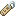

Plantas e chunks
Desde a 1.21.5, plantas crescem em qualquer chunk carregado — não é mais preciso ficar a 128 blocos. Longe da distância de simulação, nada acontece.
Revisado para Java Edition 26.3
76 farms automáticas, AFK e semiautomáticas que funcionam na Java 26.3 — escolha pelo item que você quer, siga o passo a passo e confira os drops oficiais, tirados dos arquivos do próprio jogo.
Comece pelo que você precisa
 Qual item você quer farmar?
Qual item você quer farmar?Escolha um item e veja só as farms que entregam ele. Cada farm traz o passo a passo, os materiais e, nas de mobs, os drops por abate calculados das tabelas da 26.3.
Mais procurados
Tente outro item ou .
Automática roda sozinha enquanto os chunks estão carregados.
AFK precisa de você parado por perto (spawn de mobs ou golpe final).
Semiautomática pede uma ação sua: replantar, dormir, alavanca ou farinha de osso.
Construa na ordem certa
 Uma rota que multiplica recursos
Uma rota que multiplica recursosCada etapa alimenta a seguinte. Comece barato, automatize o básico e só então parta para os projetos enormes. Toque numa farm para abrir o passo a passo.
Plantação com aldeão, árvores e o criador de aldeões: o núcleo que sustenta o resto.
Com ferro infinito vêm os funis; com bambu e algas, as fornalhas não param; o trading hall entrega os encantamentos.
Ouro para escambo e XP rápido, pólvora para os foguetes e Blazes para as poções.
Invasão, esqueletos-Wither, endermen e shulkers exigem precisão, mas entregam segurança, poderes e armazenamento sem fim.
Rendimento sem mistério
Copiar os blocos não basta. Onde você fica, o que está carregado e quem dá o golpe final decidem se a farm rende ou para.
Desde a 1.21.5, plantas crescem em qualquer chunk carregado — não é mais preciso ficar a 128 blocos. Longe da distância de simulação, nada acontece.
Entre 24 e 128 blocos de você, com luz de bloco 0 (no Nether, até 11). Ilumine as cavernas em volta ou construa no céu e no oceano.
O mundo tem um teto de monstros vivos ao seu redor. Mobs presos ou esquecidos “roubam” vagas: tire-os da área de spawn depressa.
A mais de 128 blocos, mobs somem na hora; entre 32 e 128, podem sumir aos poucos. Etiqueta, barco ou carrinho mantêm um mob para sempre.
XP e drops raros (vara de Blaze, crânio, tridente, esmeraldas) só caem se você — ou seu lobo — matar, ou se tiver acertado o mob segundos antes.
Milhares de itens no chão travam o mundo. Use funis, filtros e um interruptor para desligar a farm quando os baús encherem.
Fuja de vídeo antigo
Essas ideias ainda aparecem em tutoriais, mas a Mojang mudou a mecânica. Nenhuma delas está no catálogo.

Os projetos clássicos pararam na 1.21.8. As adaptações que circulam rendem bem menos.
O truque do gancho de armadilha só funcionava antes da 1.21.2. Use spawner de aranha, gatos ou escambo.
Desde a 26.1 os pintinhos escapam pela fresta sob o caldeirão. Feche o assador por completo.

Vilas contam camas e aldeões desde a 1.14. Projetos com dezenas de portas não invocam golens.

Desde a 26.1 a etiqueta é fabricada com papel e uma pepita; o bibliotecário parou de vender.

Desde a 1.20.5 a área sempre carregada do spawn ficou bem menor. Farms ali precisam de você por perto.
Antes do primeiro bloco
Farms são máquinas baseadas nas regras internas do jogo. Uma diferença de edição, versão, bioma ou altura muda tudo.
Confira a edição: projeto de Bedrock não funciona na Java (e vice-versa).
Confira a versão: prefira vídeos da 1.21.5 em diante e leia os comentários sobre a 26.3.
Teste a localização: bioma, estrutura, altura, chunks e distância da base.
Monte no criativo se o projeto for caro, usar portais ou depender de alinhamento.
Planeje saída e desligamento: baús, filtros e um interruptor antes de ligar.
Revisado em 23 de outubro de 2026 para a Java Edition 26.3. Os drops vêm das tabelas de loot do próprio jogo; as mecânicas foram conferidas nas notas de atualização e nos tutoriais da Minecraft Wiki.